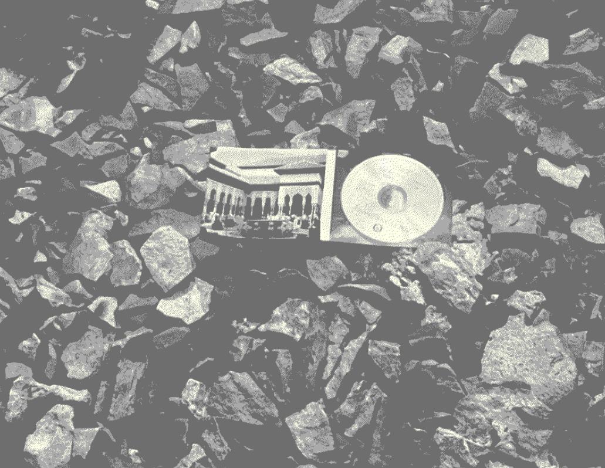
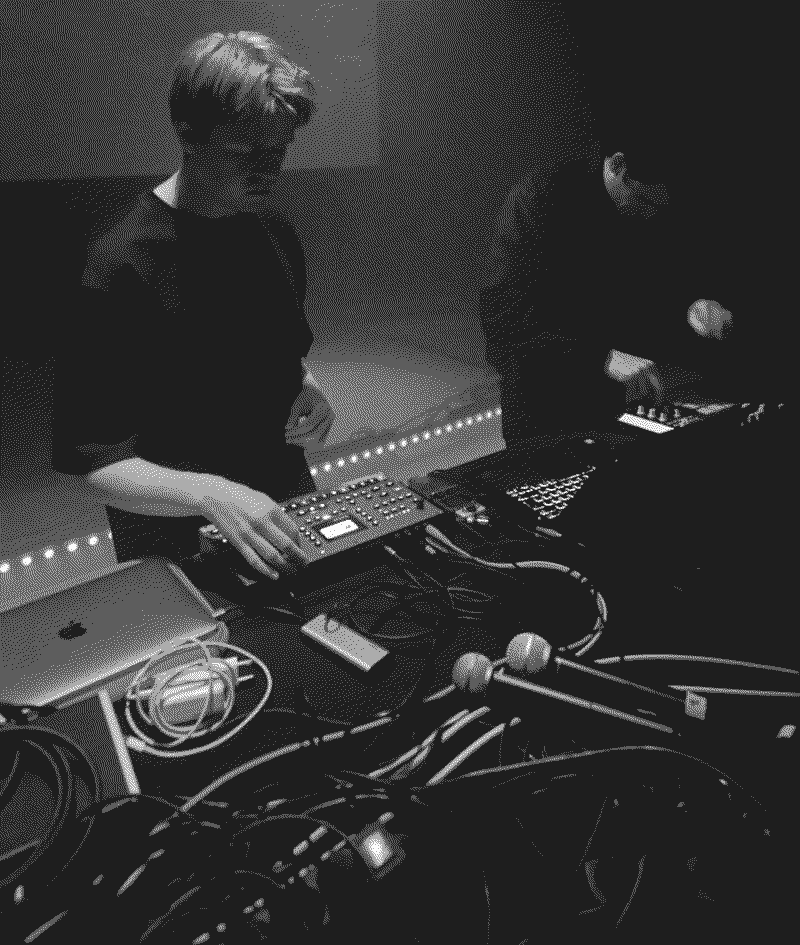
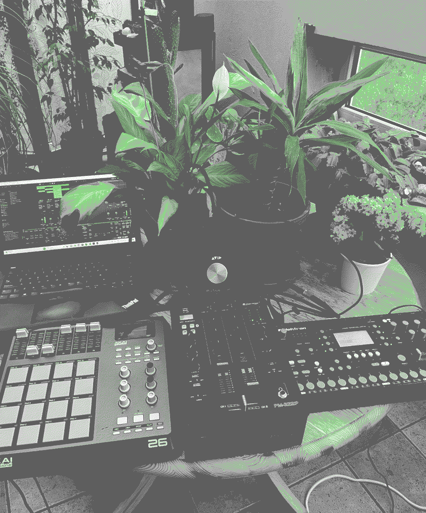

Keeping up with 23/24
240108
Happy new Year!
It's very typical to be making a new blog post like this at the beginning of a new year but I feel like there are a lot of things that I want to reflect on. Musically, it was a strange year it was probably the year where I had the most musical output but at the same time with the least amount of releases since I started to make music around 5 years ago. I feel like this is a good thing, embracing the slowness of music and letting some projects fall through or take their time to mature into something you are proud of. The only albums of the year that I released were Verk with ex.girls where I worked as a co-producer and finished the mixes with the band as well as an Improvisation record that I made with some of my friends at Mengi over the summer. The list of unreleased projects kept getting bigger and I'm very excited to see the rollout of those albums in the new year, these include: A new Pellegrina album (even 2), a Slummi record that will see a physical release in spring, a new drone album under my name on Mengi Records, a Glupsk record at the beginning of the year on Superpang, a new ep with Sara Flindt and hopefully an improvisation trio LP with Skúli Sverrisson and John McCowen.

Pellegrina performing in Poland
This is a lot of projects but I also have ambitions to add at least 2 pollur records to this list and a solo record on Skúlagata. I also performed a lot in 2023, went on my first tour with my friends in Xiupill, Flaaryr, and Sideproject (and performed with Final Boss Type Zero and Pellegrina) and played some shows in Lisbon and New York. Some highlights of the shows I played in Reykjavík were the Whaling Protest with Pellegrina and Björk and the show we organized in Bíó Paradís that same evening. Skúlagata Lævi Blandið in Kornhlaðan, Stuttbuxur við Bjarki and ex.girls. This coming year also has a promising start as I will perform with Glupsk at the All Ears festival at the beginning of the year in the Munch Museum in Oslo and then head to Denmark to perform a few shows with my friend Sara Flindt.
While all of this unfolds I try my hardest to start my M.A. thesis and keep a fun program going at Mengi - hope to see you all around!

Preperations for the Pellegrina live set